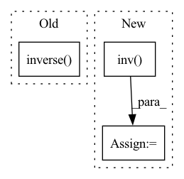

Pattern ID :4369
Before Change
if avg_rxx:
diag = Rxx.diagonal(dim1=-2, dim2=-1)
diag[..., :] = diag.mean(-1, keepdim=True)
R_inv = torch.inverse( Rxx)
// Manual way
w = torch.einsum("...nm,...m->...n", R_inv, ifc)
Y = torch.einsum("...fn,...fn->...f", Xw, w)
// Using torch module (which expects real valued flattened input)After Change
diag[..., :] = diag.mean(-1, keepdim=True)
A = Rxx
if inverse:
A = torch.linalg.inv( A)
if cholesky_decomp:
A, info = torch.linalg.cholesky_ex(A)
print("Number of errors during cholesky_decomp:", torch.where(info > 0, 1, 0).sum())
ic(A.abs().mean())
// Manual wayIn pattern: SUPERPATTERN
Frequency: 3
Non-data size: 3
Instances Fragment ID: 16083284
Project Name: rikorose/deepfilternet
Commit Name: de21b0c0bf5a7ecb9269ff313f1f1f939524b178
Time: 2022-11-08
Author: Rikorose@users.noreply.github.com
File Name: DeepFilterNet/df/multiframe.py
M Class Name: AnonimousClass
N Class Name: AnonimousClass
M Method Name: compute_ideal_wf(5)
N Method Name: compute_ideal_wf(2)
M Parent Class:
N Parent Class:
M File Name: DeepFilterNet/df/multiframe.py
N File Name: DeepFilterNet/df/multiframe.py
M Start Line: 385
M End Line: 441
N Start Line: 435
N End Line: 499
Before Change
ifc = v[..., -1] // Choose highest eigenvector
Rnn = _tik_reg(Rnn, DLOAD, EPS)
R_inv = torch.inverse( Rnn)
if cholesky_decomp:
L, info = torch.linalg.cholesky_ex(R_inv)
ic(torch.where(info > 0, 1, 0).sum())
R_inv = LAfter Change
Rnn = _tik_reg(Rnn, DLOAD, EPS)
if inverse:
A = torch.linalg.inv( Rnn)
else:
A = Rnn
if cholesky_decomp:
A, info = torch.linalg.cholesky_ex(A) Fragment ID: 16083287
Project Name: rikorose/deepfilternet
Commit Name: 71013a3ff5bc0ff6435a10f2906e288588c36863
Time: 2022-10-31
Author: Rikorose@users.noreply.github.com
File Name: DeepFilterNet/df/multiframe.py
M Class Name: AnonimousClass
N Class Name: AnonimousClass
M Method Name: compute_ideal_mvdr(3)
N Method Name: compute_ideal_mvdr(1)
M Parent Class:
N Parent Class:
M File Name: DeepFilterNet/df/multiframe.py
N File Name: DeepFilterNet/df/multiframe.py
M Start Line: 405
M End Line: 468
N Start Line: 435
N End Line: 507
Before Change
mat_1 = torch.matmul(torch.transpose(self.__feature_list, 0, 1), self.__feature_list)
target = torch.unsqueeze(self.__target_list, dim=0)
mat_2 = torch.matmul(torch.transpose(self.__feature_list, 0, 1), torch.transpose(target, 0, 1))
return torch.unsqueeze(torch.squeeze(torch.matmul(torch.inverse( mat_1) , mat_2), dim=1), dim=0)
def get_parameters(self):
return self.__parametersAfter Change
mat_1 = np.matmul(self.__feature_list.T, self.__feature_list)
target = np.expand_dims(self.__target_list, axis=0)
mat_2 = np.matmul(self.__feature_list.T, target.T)
mat_3 = np.matmul(np.linalg.inv( mat_1) , mat_2)
return np.expand_dims(np.squeeze(mat_3, axis=1), axis=0)
Fragment ID: 16083288
Project Name: govindansriram/cobraml
Commit Name: f0db299c51b0dc3f67917bac00f46a342eaa6fe2
Time: 2021-07-27
Author: sriramgovindanwork@gmail.com
File Name: Regression/Linear.py
M Class Name: LinearRegression
N Class Name: LinearRegression
M Method Name: normal_eqt(1)
N Method Name: normal_eqt(1)
M Parent Class:
N Parent Class:
M File Name: Regression/Linear.py
N File Name: Regression/Linear.py
M Start Line: 22
M End Line: 25
N Start Line: 34
N End Line: 39